Descubre nuestros procedimientos
Procedimientos Exclusivos Rinoplastia Estética
🎈 Funcional (tabique moderado) adicional 🎈
Procedimiento quirúrgico que además de abordar aspectos estéticos de la nariz, se enfoca en corregir problemas funcionales relacionados con el tabique nasal, como desviaciones o dificultades respiratorias.
🎈 Secundaria 🎈
Cuando se realiza una segunda cirugía de rinoplastia para corregir resultados insatisfactorios o complicaciones derivadas de una rinoplastia previa.
🎈 Cornetes 🎈
Durante la cirugía, se reduce el tejido excesivo para mejorar el flujo de aire y aliviar síntomas como la congestión nasal crónica. Esto puede realizarse mediante diversas técnicas, como radiofrecuencia, láser o resección quirúrgica, y se realiza generalmente bajo anestesia local o general.
🎈 Corte de alas 🎈
Procedimiento para reducir el tamaño o modificar la forma de las alas nasales, generalmente realizado como parte de una rinoplastia.
🎈 Narices negroides 🎈
Tipo específico de rinoplastia diseñado para pacientes con rasgos étnicos africanos o afrodescendientes, con consideraciones particulares sobre la anatomía nasal y las expectativas estéticas.
Rinoplastia Estética
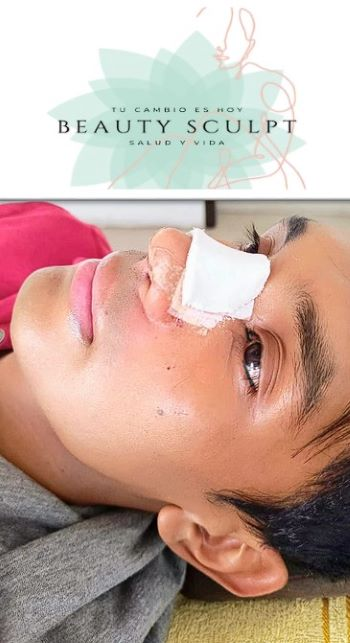Cirugía estética para corregir y mejorar la forma y apariencia de la nariz. (Puede implicar cambios en la forma, tamaño y posición de la nariz para lograr un aspecto más armónico con el rostro del paciente)
Blefaroplastia Superior
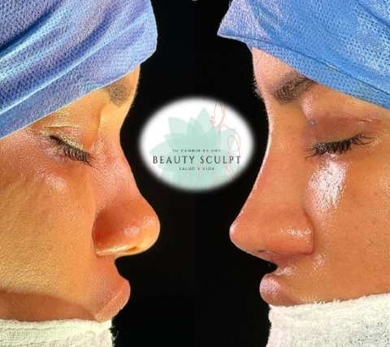Cirugía estética que se centra en corregir el exceso de piel y las bolsas de grasa en los párpados superiores para lograr un aspecto más rejuvenecido y descansado en la mirada mas Rinoplastia estética
Blefaroplastia Inferior
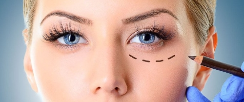Procedimiento de cirugía estética que se enfoca en corregir el exceso de piel, bolsas de grasa y arrugas debajo de los ojos, con el fin de lograr una apariencia más juvenil y fresca en la mirada. Durante la blefaroplastia inferior, se elimina el exceso de piel y grasa de la zona inferior de los párpados.
Blefaroplastia 4 Párpados
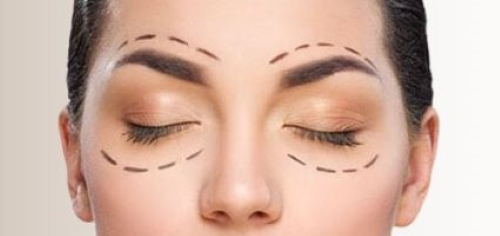Es un procedimiento de cirugía estética que aborda tanto los párpados superiores como los inferiores para corregir el exceso de piel, bolsas de grasa y arrugas en toda la zona de los ojos. El objetivo es rejuvenecer la apariencia de la mirada.
Bichectomía
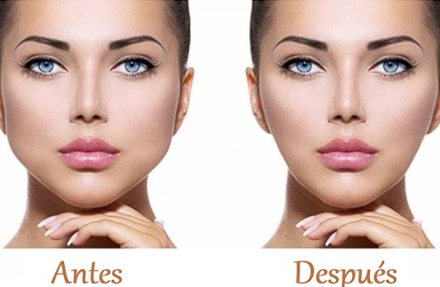La bichectomía es un procedimiento de cirugía estética que se centra en la reducción de las bolsas de grasa de las mejillas, conocidas como bolsas de Bichat. Estas bolsas de grasa pueden dar a las mejillas un aspecto abultado o redondeado.
LipoPapada
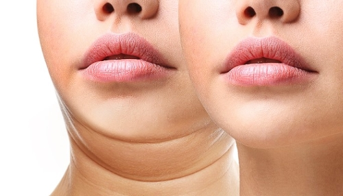La liposucción es un procedimiento estético que elimina la grasa localizada en áreas como abdomen, caderas o muslos. Se realiza mediante pequeñas incisiones y aspiración de la grasa con una cánula, mejorando el contorno corporal y logrando una figura más esculpida.
Perfilamiento Mandibular
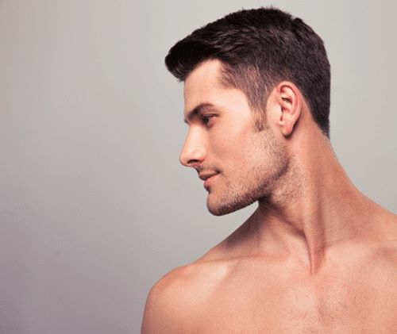Procedimiento estético que busca mejorar la apariencia de la mandíbula mediante cirugía para modificar su forma y contorno, ya sea reduciendo o aumentando su tamaño. Esto incluye técnicas como la reducción del ángulo mandibular
Lifting Facial
De Tercio Medio
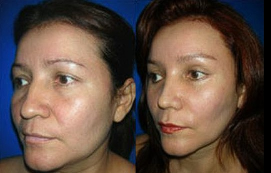
De Tercio Completo
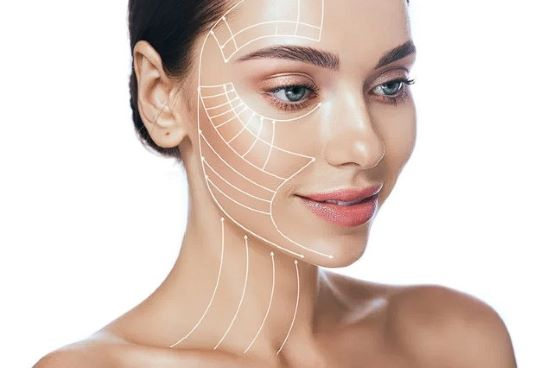
Procedimiento estético que se enfoca en rejuvenecer y mejorar el aspecto de la parte media de la cara, incluyendo la región de las mejillas, los pómulos y la zona alrededor de la boca. Durante este procedimiento, se tensa y reposiciona la piel y los tejidos faciales para reducir la flacidez, las arrugas y las líneas de expresión, brindando un aspecto más firme y juvenil.
Procedimiento estético que aborda la rejuvenecimiento integral de la cara, incluyendo el tercio superior (frente y cejas), el tercio medio (mejillas y pómulos) y el tercio inferior (mandíbula y cuello). Se realiza una remodelación profunda de los tejidos faciales.
LIPOESCULTURA
ANTES
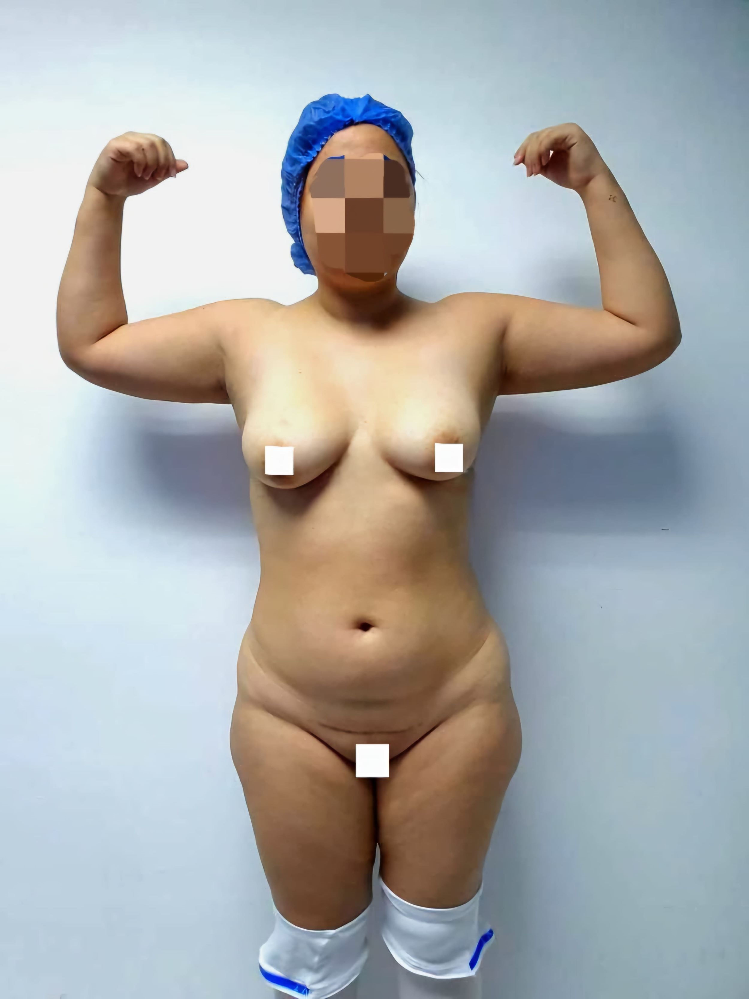DESPUÉS

PROCEDIMIENTO ESTÉTICO QUE COMBINA LA LIPOSUCCIÓN PARA ELIMINAR GRASA LOCALIZADA CON TÉCNICAS DE MODELADO CORPORAL PARA ESCULPIR Y DEFINIR ÁREAS ESPECÍFICAS DEL CUERPO
LIPOABDOMINOPLASTIA
¡Combinación de la liposucción para eliminar grasa abdominal con la abdominoplastia para corregir la flacidez y el exceso de piel en la zona del abdomen, obteniendo un abdomen más plano y firme!
AUMENTO DE MAMAS
-
CON PRÓTESIS ISD
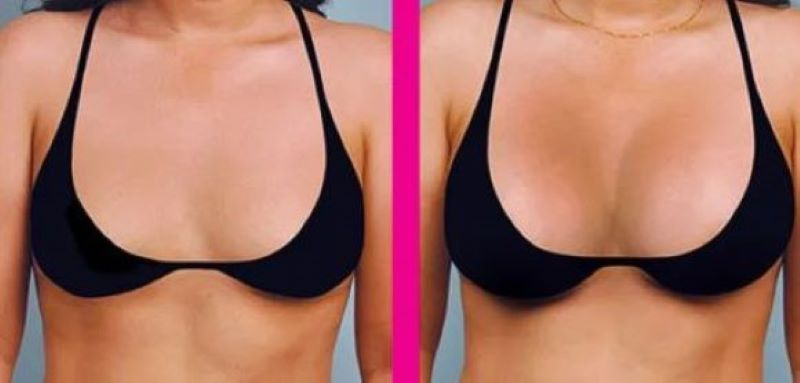 -
CON PRÓTESIS SEBBIN
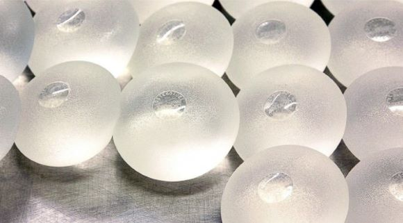 -
CON PRÓTESIS MOTIVA
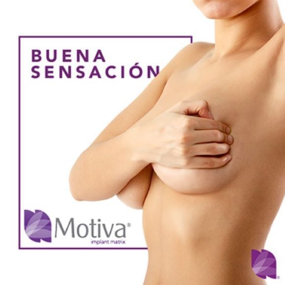
¡POTENCIA TU CONFIANZA Y BELLEZA, DESCUBRE LA NUEVA VERSIÓN DE TI MISMA CON NUESTRO INNOVADOR AUMENTO DE MAMAS.MVIVE LA PLENITUD DE TU FEMINIDAD Y ATRÉVETE A BRILLAR COMO NUNCA ANTES!
PLAN ACUMULATIVO
APROVECHA NUESTRO PLAN ACUMULATIVO PARA CONGELAR EL VALOR DE TU CIRUGÍA Y PAGAR EN CÓMODAS CUOTAS POR UN AÑO. OBTÉN EL CUERPO QUE DESEAS SIN COMPROMETER TUS FINANZAS.
QUIERO LA OFERTA